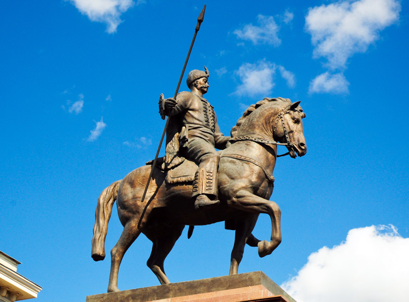
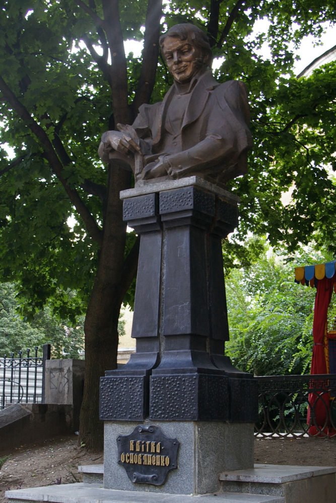
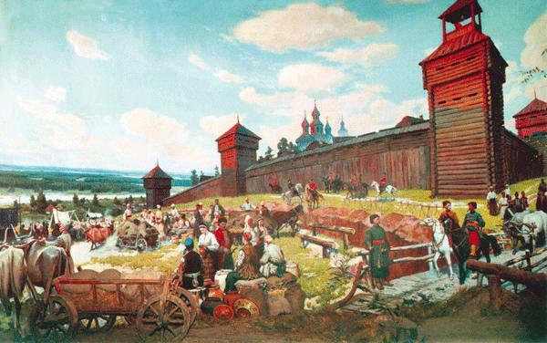
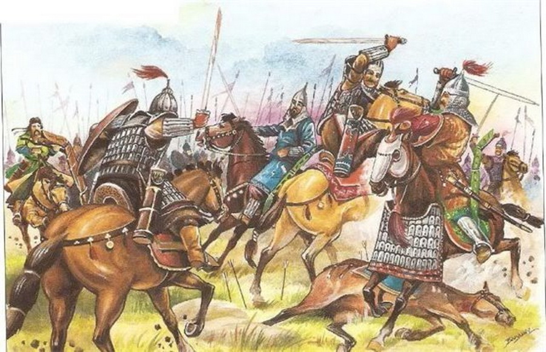
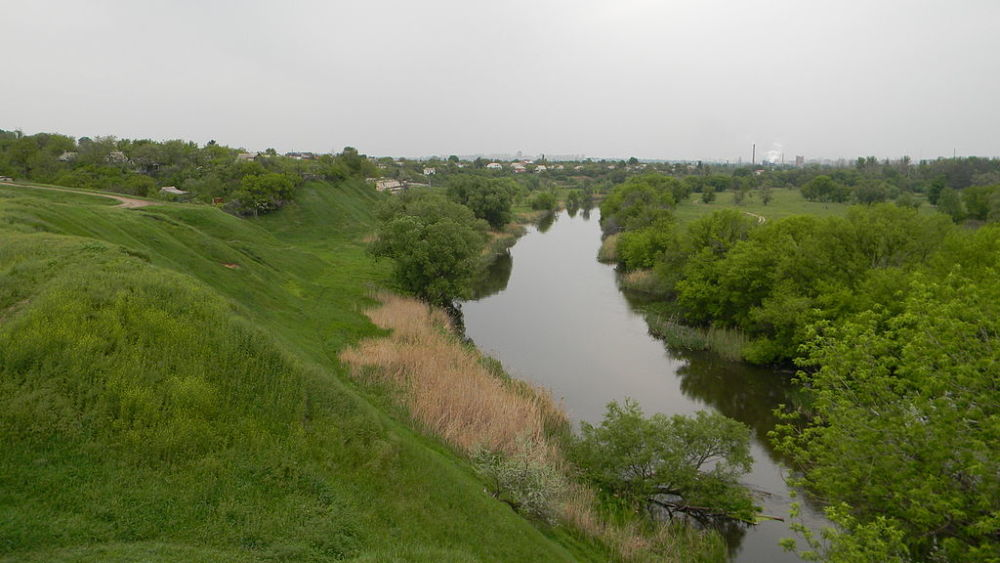

Легенда про Харька
Найвідоміша легенда про виникнення Харкова пов'язана з Харьком, першим поселенцем.
Згідно з цією версією, в середині 17 століття на правому березі річки Харків, біля Бєлгородської криниці (сьогодні - початок вул. Шевченка) виник невеличкий хутір. Заснувала його людина на ім'я Харько, за однією з версій його повне ім'я - Харитон. Різні автори по-різному описують рід діяльності Харька. Деякі називають його простим козаком, інші - козацьким сотником. В літературі існує також версія, згідно з якою Харько, не мав відношення до військової служби, будучи пасічником.
Обрана ним місцевість виявилася настільки вдалою і придатною для життя, що почала залучати переселенців з інших місць. Незабаром хутір розрісся, з'явилися нові слободи. Виникло поселення отримало назву на честь свого засновника - Харків, як і річка на березі якої воно виникло.
До речі, жоден з відомих варіантів легенди не вказує точний рік заснування Харкова, обмежуючись лише згадкою 17 століття. В оповіданні наведеному в «Путешественних записках Василя Зуєва з Петербурга до Херсона в 1781 и 1782 роках» автор відносить час заснування Харківського хутора до 1680 році.
Легенда про Харька зустрічається в літературних творах вже в 18 столітті і, по праву,її можна вважати однією з найперших.
Легенда про Андрія Квітку
Найбільш романтичну і особливо не достовірну легенду про виникнення Харкова привів в оповіданні «Заснування Харкова. Старовинний переказ »Григорій Квітка-Основ'яненко. Будучи представником одного з найстаріших козацьких родів Слобожанщини письменник вирішив пов'язати заснування міста і походження своєї сім'ї.
Першим поселенцем, які прийшли на землі сучасного Харкова, автор називає свого предка, а місцем з якого в середині 17 століття починалося місто - історичний район Основу. Подібний вибір цілком зрозумілий, адже слобода Основа - родовий маєток Квіток.
Згідно з версією Григорія Квітки-Основ'яненка на початку 17 століття хлопчик на ім'я Андрій, син московського боярина, який втік за кордон і там помер, потрапляє до Києва, де опиняється на вихованні у пана Яселковського.
За красу і добру вдачу панська дочка називає Андрія Квіткою. Згодом ласкаве прізвисько трансформувалося в прізвище. Найцікавіше в житті Андрія Квітки починається з його переїздом в будинок київського воєводи, чия дружина вирішила взяти на себе опіку над маленьким сиротою.
Тут Андрій зустрічає дочку воєводи. Між молодими людьми зав'язуються романтичні відносини і юні закохані, заручившись підтримкою кількох вірних козаків вирішуються на втечу з Києва. Молода сім'я знайшла притулок на незаселених територіях, недалеко від Чугуєва, які в наслідку отримали назву Основа.
Надалі Андрій Квітка займався залученням переселенців з Наддніпрянської України і підставою нових слобід. Особливо йому сподобалися території навколо хутора на березі річки Харків, у Білгородській криниці.
Збільшення числа селян призвело до вирішення побудувати укріплене місто на горі, по обидва боки якої проходили річки Харків і Лопань (сьогодні це місці відомому харків'янам під назвою Університетська гірка). На загальних зборах виникло місто вирішили назвати Харків, за назвою річки,що тут протікає.
Звичайно ж історія переказана Григорієм Квіткою-Основ'яненко не розглядається істориками як повноцінна версія заснування міста, але вона є дуже колоритною, міською легендою.
Харківська фортеця
Свою версію заснування міста Харкова також запропонував історик, академік Української Академії наук, професор Харківського університету Дмитро Багалій.
Спираючись на архівні документи, вчений стверджував, що в 1654 році на територію сучасного Харкова прийшли переселенці з Наддніпрянської України. Для проживання вони обрали територію над річками Харків і Лопань - Харківське городище. Сьогодні - це центральна частина міста, відома як Університетська гірка. Крім будівництва власних будинків, через кілька років селяни починають зводити зміцнення.
Першим населенням Харкова вчений називав козаків, які приходили на ці землі разом із сім'ями. Спираючись на знайдений ним в архіві поіменний список харківців за 1655 рік, історик стверджував, що харківські козаки, підпорядковувалися отаману, ділилися на сотні і десятки, на чолі з сотниками і десятниками. Загальна ж кількість населення, з урахуванням жінок і дітей, в цей час становило близько 1500 - 1800 чоловік.
Крім того, саме Дмитру Багалію належить легенда про харківського осадчого Івана Каркача, який нібито очолював перших переселенців, які прийшли близько 1654 до берегів Харкова і Лопані. Але сучасні харківські історики і краєзнавці вельми скептично ставляться до постаті Івана Каркача, вважаючи його більш вигаданим персонажем, ніж реальною людиною.
На місці половецької Шарукані
Безперечним є той факт, що люди на території сучасного Харкова жили задовго до 1654 року і в цілому 17 століття. Ось уже кілька століть вчені висувають найрізноманітніші припущення про те який же населений пункт існував на цих землях до заснування Харкова.
Так, в кінці 19 століття історик, професор Харківського університету Микола Аристов висунув теорію про те, що наше місто виникло на руїнах Шарукані - легендарної половецької фортеці. Точних відомостей про місцезнаходження міста практично не збереглося, а інформація наявна в літописних пам'ятках по-різному трактується істориками.
Вважається, що Шарукань існувала в 11 - 13 століттях і представляла собою зимову стоянку половців. Забудова міста складалася в основному з юрт кочівників і нечисленних кам'яних будівель. Крім половців місто населяли також алани (іраномовні кочові племена). У 1111 році об'єднане військо князів Київської Русі на чолі з Володимиром Мономахом взяло місто. Після чого почався поступовий занепад Шарукані. Остаточно місто спорожніло після нападу монгольського війська в 1223 році.
Ймовірно питання про місцезнаходження легендарної Шарукані буде займати розуми ще не одного покоління українських істориків.
У складі Новгород-Сіверського князівства
Іншим літописним містом, з яким може бути пов'язана давня історії Харкова є Донець - одне з міст Новгород-Сіверського князівства. Починаючи з 10 століття місто входило до складу Київської Русі, виступаючи не тільки великим торгово-ремісничим центром, а й стратегічно важливим форпостом на південних рубежах держави. Саме в Донець прибув, після втечі з половецького полону в 1185 або 1186 році новгород-сіверський князь Ігор Святославович. Ці події лягли в основу «Слова о полку Ігоревім». Історія Дінця припинилася в 1239 році, після нападу на нього монгольського війська.
Залишки давньоруського міста виявили під час дослідження Донецького городища - пам'ятки археології, розташованого на високому березі річки Уди. Сьогодні це частково територія Новобаварського району Харкова і околиця селища Покотилівка.
Донець розташований в 10 км від Харківського городища, на місці якого в 17 столітті виник сучасний Харків. Тому деякі вчені вважають, що в 11 столітті тут могли існувати два давньоруських міста-супутника. Часто удільні князі засновували свої форпости не в всередині існуючого поселення, а біля нього, як правило на узвишші води. Донець, в такому випадку, виступав князівським оборонним пунктом, а перевершуюче його за розмірами Харківське городище населяли ремісники і простий люд.
Вивчаючи давню історію харківських земель, слід пам'ятати, що вік будь-якого населеного пункту відраховують з початку безперервного проживання на цьому місці людей.
Як бачимо, за більш ніж трьохсотлітнє існування Харкова виникло безліч як наукових, спираються на документальні відомості, так і повністю фантастичних теорій про його заснування. Можливо колись істина стане відома.